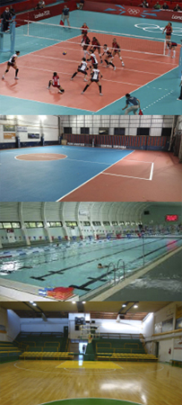

Entrevista al director:
¿QUIÉNES SOMOS?
En 1998 los hermanos Carlos Javier y Carlos Patricio Mac Allister deciden darle forma a un proyecto soñado y planificado durante mucho tiempo: la fundación de un club propio, el Club Deportivo Mac Allister. Luego de una breve experiencia de dos años con una escuela de fútbol, adquieren un predio de cuatro hectáreas ubicado a 5 kilómetros del centro de la ciudad de Santa Rosa, en donde se construirían las instalaciones del futuro club El Deportivo Mac Allister es un club cuya actividad deportiva excluyente es la práctica de fútbol. Su objetivo fundamental es la formación y promoción de futbolistas para su posterior inserción en el fútbol profesional. Para ello, cuenta con una moderna construcción emplazada en un predio propio, en el que se dan cita a diario más de trescientos niños y jóvenes que conforman la Escuela de Fútbol del club, las divisiones inferiores y la Primera División.
